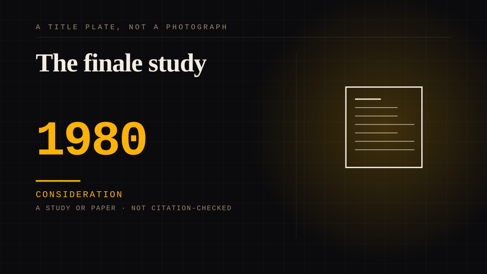

A study or paper · 1980 · Research
The finale study
Academic work measuring grief responses to soap opera finales and finding the same markers as bereavement.

The first hard evidence that a fictional ending produces a real grief response, and the research that was ignored for forty years by a field that had assumed otherwise.
Consideration. The part where somebody stops and thinks. The research, the diagnosis, the ethics, the lawsuits, the regulators. Roughly fifty years of arguing with itself about whether this is a relationship.
Same story, 4 other entries
The soap opera1933 → M*A*S*H1983 → The finale nobody wanted2019 → The finale that moved the schedule2023
Where it sits
1950 1950-1999 · 1980 1999
Provenance · 1 source record(s)
- unverifiedNo specific claim is recorded against this source. The record is a pointer to the work in general; the entry's own prose is the argument and is not sourced line by line.ABC News, 2023
Connected · 3 out, 3 in
Reported as a story
It sits in